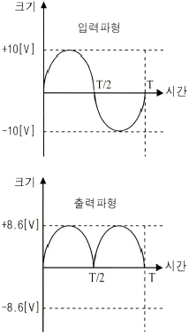
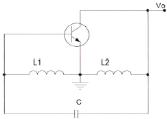
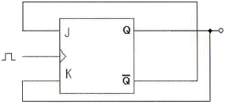
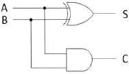
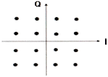
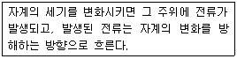
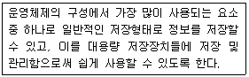
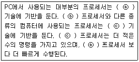
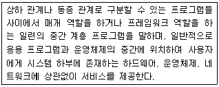

무선설비기사 (2014-10-04 기출문제)
1과목: 디지털 전자회로
1. 다음 중 스위칭 정전압 회로에 대한 설명으로 틀린 것은?
- 스위칭 정전압 회로는 직렬 정전압 회로에 비하여 소형ㆍ경량이나, 트랜지스터의 컬렉터 손실이 크게 되어 효율성이 나쁘다.
- 스위칭 정전압 회로를 흔히 SMPS(Switching Mode Power Supply)라고 부르기도 한다.
- 직렬 정전압 회로와 차이점은 제어 트랜지스터가 연속적인 전류를 흘리는 것이 아니라 단속(On-Off)적으로 전류를 흘린다.
- 스위칭 트랜지스터의 이미터에 흐르는 전류는 펄스 형태로 나타난다.
(정답률: 71%)

2. 다음 중 아래 그림과 같은 입ㆍ출력 파형 특성을 만족시키는 정류 회로는? (단, 다이오드의 장벽전압은 0.7[V]이고, 변압기의 권선비는 1:1로 가정한다.)

- 반파정류회로
- 중간탭 전파정류회로
- 브리지 전파정류회로
- 용량성 필터를 갖는 반파정류회로
(정답률: 69%)
3. 정류회로의 부하에 병렬로 콘덴서를 연결한 용량성 평활회로의 경우 부하저항이 감소하면 리플 전압은 어떻게 변화하는가?
- 리플이 증가한다.
- 리플이 감소한다.
- 리플의 증가와 감소가 반복한다.
- 변화가 없다.
(정답률: 77%)
4. 다음 중 영 바이어스(Zero Bias)된 B급 푸시풀(Push-Pull) 증폭기에서 발생되는 왜곡의 원인으로 가장 적합한 것은?
- 주파수 일그러짐
- 진폭 일그러짐*
- 교차 일그러짐
- 위상 일그러짐
(정답률: 57%)
5. 전압이득이 40[dB]이고 차단주파수가 400[kHz]인 개루프(Open Loop) 증폭기에 부궤환 회로를 사용하여 전압이득이 20[dB]로 감소되었을 경우 폐루프(Closed-Loop) 증폭기의 차단주파수는? (문제 오류로 실제 시험에서는 모두 정답처리 되었습니다. 여기서는 1번을 누르면 정답 처리 됩니다.)
- 800[kHz]
- 600[kHz]
- 400[kHz]
- 200[kHz]
(정답률: 81%)
6. 다음 중 전치 증폭기에 대한 설명으로 틀린 것은?
- 출력신호를 1차 증폭시킨다.
- 초기신호를 정형한다.
- 고출력 증폭용으로 사용된다.
- 일반적으로 종단 증폭기에 비해 중폭률이 낮다.
(정답률: 60%)
7. 다음 중 이상적인 연산증폭기에 대한 설명으로 틀린 것은?
- 입력 임피던스는 무한대(∞)이다.
- 출력 임피던스는 0이다.
- 공통모드제거비(CMRR)는 0이다.
- 대역폭이 무한대(∞)이다.
(정답률: 75%)
8. 다음 그림과 같은 회로에서 결합계수가 0.5이고, 발진주파수가 200[kHz]일 경우 C의 값은 얼마인가? (단, π=3.14이고, L1=L2=1[mH]로 가정한다.)

- 211.3[μF]
- 211.3[pF]
- 422.6[μF]
- 422.6[pF]
(정답률: 74%)
9. 다음 중 발진회로를 구성하는 요소가 아닌 것은?
- 위상천이회로
- 정궤환회로
- RC타이밍회로
- 감쇄회로
(정답률: 65%)
10. 다음 중 단측파대 변조 방식의 특징으로 틀린 것은?
- 점유주파수 대역폭이 매우 작다.
- 복조를 할 경우 반송파의 동기가 필요하다.
- 송신출력이 비교적 적어도 된다.
- 전송 도중에 복조되는 경우가 있다.
(정답률: 76%)
11. 다음 중 디지털 변조방식에 대한 설명으로 틀린 것은?
- ASK 방식은 반송파의 진폭을 변화시키는 방식으로 장거리 및 대용량 전송에는 적합하지않다.
- FSK 방식은 방송파의 주파수를 변화시키는 방식으로 전송로의 영향을 많이 받기 때문에 전송로 상태가 열악한 통신에는 적합하지 않다.
- PSK 방식은 반송파의 위상을 변화시키는 방식으로 심볼에러가 우수하고 전송로 등에 의한 레벨 변동에 영향을 적게 받는다.
- QAM 방식은 반송파의 진폭과 위상을 상호 변환하여 싣는 방식으로 제한된 전송 대역 내에서 고속 전송에 유리하다.
(정답률: 74%)
12. 다음 중 펄스에 대한 설명으로 틀린 것은?
- 짧은 시간에 전압 또는 전류의 진폭이 급격하게 변화하는 파형이다.
- 충격파, 직사각형파, 톱니파, 계단파 등이 있다.
- 전압이나 전류의 성분이 양인 양(+)펄스와 음인 음(-)펄스가 있다.
- 펄스에는 고조파가 포함되지 않는다.
(정답률: 82%)
13. 다음 중 단안정 멀티바이브레이터에 대한 설명으로 틀린 것은?
- 두 증폭단 사이에 AC 결합과 DC 결합이 함께 쓰인다.
- 회로의 시정수로 주기가 결정된다.
- 정상 상태에서 한 개의 TR이 On이면 다른 TR은 Off이다.
- 1개의 펄스가 인가되면 2개의 안정상태를 유지한다.
(정답률: 74%)
14. 2진수 1110을 2의 보수로 변환한 것으로 맞는 것은?
- 1010
- 1110
- 0001
- 0010
(정답률: 80%)
15. 다음 중 부울대수의 정리가 성립되지 않는 것은?
- A+B=B+A
- AㆍB=A(A+B)
- A(B+C)=AB+AC
- A+(BㆍC)=(A+B)(A+C)
(정답률: 78%)
16. JK Flip Flop을 그림과 같이 결선하였을 경우 클럭 펄스가 인가될 때마다 Q의 출력상태는 어떻게 동작하는가?

- Toggle
- Reset
- Set
- Race 현상
(정답률: 75%)
17. 10진 BCD 코드를 LED 출력으로 표시하려면 어떤 디코더 드라이브가 필요한가?
- BCD-10세그먼트
- Octal-10세그먼트
- BCD-7세그먼트
- Octal-7세그먼트
(정답률: 83%)
18. 비동기식 5진 계수회로는 최소 몇 개의 플립플롭이 필요한가?
- 4
- 3
- 2
- 1
(정답률: 82%)
19. 다음 그림의 회로명칭은 무엇인가?

- 반가산기
- 반감산기
- 전가산기
- 전감산기
(정답률: 79%)
20. 다음 중 디지털 컴퓨터(Digital Computer)의 보조 기억장치가 아닌 것은?
- 자기 드럼(Magnetic Drum)
- 자기 테이프(Magnetic Tape)
- 자기 디스크(Magnetic Disk)
- 자기 코어(Magnetic Core)
(정답률: 79%)
2과목: 무선통신 기기
21. 다음 중 전력증폭기의 무선 규격과 관련이 없는 것은?
- IMD(Intermodulation Distortion) 특성
- ACPR(Adjacent Channel Power Ratio) 특성
- 1[dB] Compression Point 특성
- NF(Noise Figure) 특성
(정답률: 73%)
22. 대역폭이 45[kHz]인 방송 프로그램 신호를 PCM 방식으로 전송하고자 할 때 필요한 최소 표본화 주파수는 얼마인가?
- 30[kHz]
- 45[kHz]
- 90[kHz]
- 65[kHz]
(정답률: 89%)
23. 수신 주파수가 850[kHz]이고 국부발진주파수가 1,3⑤[kHz]일 때 영상주파수는 몇 [kHz]인가?
- 790[kHz]
- 1,020[kHz]
- 1,760[kHz]
- 2,155[kHz]
(정답률: 86%)
24. 다음 중 DSB 방식에 비하여 SSB 방식의 장점으로 틀린 것은?
- 송신기의 소비전력이 약 30[%] 정도 줄어든다.
- 선택성 페이딩의 영향이 6[dB] 정도 개선된다.
- SNR 개선이 첨두 전력이 같을 때 약 12[dB] 정도 개선된다.
- 대역폭이 축소되어 주파수 이용률이 개선된다.
(정답률: 83%)
25. 다음 중 초단파대 이하의 무선송신기에서 종단전력증폭기를 안테나와 결합시킬 경우 주로 π형 결합회로가 사용되는 이유가 아닌 것은?
- 반사파가 제거된다.
- 정합회로 설계가 용이하다.
- 스퓨리어스 발사 억제에 효과적이다.
- 멀티밴드(Multi Band) 조정이 용이하다.
(정답률: 56%)
26. 2진 ASK신호의 전송속도가 1,200[bps]일 경우 보[Baud] 속도는 얼마인가?
- 300[Baud/초]
- 400[Baud/초]
- 600[Baud/초]
- 1,200[Baud/초]
(정답률: 87%)
27. FSK 신호는 정보데이터에 의하여 반송파의 무엇을 변경하여 얻는 신호인가?
- 주파수
- 위상
- 진폭
- 위상과 진폭
(정답률: 87%)
28. 다음 그림은 어떤 변조방식의 성상도를 나타낸 것인가?

- 16PSK
- 16ASK
- 16QAM
- 16FSK
(정답률: 87%)
29. 다음 중 선박에서 위성을 이용하여 위치를 측정할 수 있는 장치는?
- 로란(LORAN) C
- 데카(DECCA)
- GPS
- RDF
(정답률: 91%)
30. 다음 중 무선 항법 장치가 아닌 것은?
- VOR
- DME
- ILS
- NBDP
(정답률: 75%)
31. 다음 중 UPS의 구성에 대한 설명으로 옳지 않은 것은?
- 입력 필터부 : 고조파 성분을 없애는 장치
- 정류부 : 교류전원을 직류전원으로 변환하는 장치
- Static 스위치부 : 장비문제로 출력에 전원이 공급되지 않을 경우 출력으로 전원을 공급할 수 있는 비상 전원 공급용 스위치부
- 축전지 : 전원을 충전하는 장치
(정답률: 86%)
32. 다음 중 정류회로의 특성에 관한 설명이 잘못된 것은?
- 전압변동률은 부하전류가 커지면 커질수록 증가하게 된다
- 맥동률은 부하전류가 작아지면 작을수록 감소하게 된다.
- 파형률은 백분율로 하지 않으며, 부하전류가 증가하면 커진다.
- 정류효율의 값이 크면 교류가 직류로 변환되는 과정에서 손실이 적게 된다.
(정답률: 81%)
33. 다음 중 납 축전지의 단자 전압 변화 원인으로 옳은 것은?
- 외부 충격
- 단자 접촉 불량
- 전해액의 비중
- 양극판 재질
(정답률: 87%)
34. 다음 중 정류회로의 전압 변동 원인으로 적합하지 않은 것은?
- 오랜 사용 기간
- 부하 변동
- 교류 입력전압 변동
- 온도에 따른 소자 특성 변화
(정답률: 77%)
35. 전원장치에 사용되는 평활회로의 역할을 무엇인가?
- 저역여파기
- 고역여파기
- 대역여파기
- 대역소거여파기
(정답률: 81%)
36. 다음 중 AM 송신기의 전력측정 방법으로 적합하지 않은 것은?
- 공중선의 실효 저항에 의한 측정
- 볼로미터 브리지에 의한 전력측정
- 의사 공중선을 사용하는 방법
- 전구 부하에 의한 방법
(정답률: 84%)
37. 희망신호 근처에 방해파가 있을 경우 수신기의 감도가 저하되는 현상을 무엇이라 하는가?
- 혼변조
- 상호변조
- 감도억압효과
- 스퓨리어스 레스폰스
(정답률: 58%)
38. 기준 안테나로 무손실 반파장 다이폴 안테나와 등방성 안테나를 사용하여 피측정 안테나의 이득을 측정한 경우 각각의 이득을 무엇이라고 하는가?
- 상대이득, 절대이득
- 상대이득, 지상이득
- 절대이득, 지상이득
- 절대이득, 상대이득
(정답률: 83%)
39. 정류회로에서 평균값을 지시하는 가동코일형 직류 전압계를 이용하여 직류 전압을 측정한 결과값이 100[V]이고, 실효값을 지시하는 전류력계형 전압계를 이용하여 교류 전압을 측정한 결과값이 2[V]일 경우 리플률은 몇 [%]인가?
- 1[%]
- 2[%]
- 4[%]
- 10[%]
(정답률: 84%)
40. 단상 전파 정류회로의 직류 출력전압과 직류 출력전력은 단상 반파 정류 회로와 비교하여 각각 몇 배인가?
- 1배, 2배
- 1배, 4배
- 2배, 2배
- 2배, 4배
(정답률: 85%)
3과목: 안테나 공학
41. 다음 지문에서 설명하는 두 개의 법칙으로 맞는 것은?

- 옴의 법칙, 나이퀘스트 정의
- 델린저 현상, 페이딩
- 패러데이 법칙, 렌츠의 법칙
- 암페어의 오른나사 법칙, 렌츠의 법칙
(정답률: 87%)
42. 다음 중 전자파에 대한 설명으로 틀린 것은?
- 전계와 자계가 이루는 평면에 수직으로 진행하는 파진
- 동 방향에 평행인 방향으로 진행하는 파
- 전계와 자계가 서로 얽혀 고리 모양으로 진행하는 파
- TE(횡전파), TM(횡자파), TEM(횡전자파)의 합성파
(정답률: 74%)
43. 유전체에서 변위전류를 발생하는 것은?
- 전속밀도의 공간적 변화
- 분극 전하밀도의 공간적 변화
- 전속밀도의 시간적 변화
- 분극 전하밀도의 시간적 변화
(정답률: 83%)
44. 다음 중 S-파라미터(Scattering parameter)의 물리적 의미로 틀린 것은? (단, Zo는 전송선로의 특성 임피던스이다.)
- S11은 Zo에 정합된 출력을 갖는 입력 반사계수이다.
- S21는 순방향 전송 계수이다.
- S12는 역방향 전송 계수이다.
- S22는 Zo에 정합된 입력을 갖는 출력 전파계수이다.
(정답률: 75%)
45. 다음 중 동축급전선에 대한 설명으로 잘못된 것은? (단, f : 주파수, D : 외부도체 직경, d : 내부도체 직경)
- 전송손실은 f2에 비례하여 커진다.
- 전송손실이 최소로 되는 내경과 외경의 비(D/d)가 존재한다.
- 내부도체 직경과 외부도체 직경의 비(D/d)가 같으면 특성 임피던스는 내경과 외경에 의해 결정된다.
- 특성 임피던스가 같은 경우에 케이블이 굵으면 손실이 적다.
(정답률: 76%)
46. 전송선로의 인덕턴스가 2[μH/m], 커패시턴스가 50[pF/m]일 때 이 선로에 대한 위상속도는?
- 0.1×108[m/sec]
- 1×108[m/sec]
- 10×108[m/sec]
- 100×108[m/sec]
(정답률: 76%)
47. 다음 중 급전선에 대한 설명으로 틀린 것은?
- 정재파가 분포되어 있는 급전선을 동조 급전선이라 한다.
- 비동조 급전선은 동조 급전선보다 전력의 손실이 적다.
- 동조 급전선은 거리가 짧을 때, 비동조 급전선은 길 때 사용한다.
- 비동조 급전선은 정합장치가 불필요하다.
(정답률: 78%)
48. 다음 중 도파관에 대한 설명으로 옳은 것은?
- 차단파장이 가장 짧은 모드를 기본자태(Dominant Mode)라고 한다.
- 도파관내에서의 파장(관내파장)은 자유공간에서의 파장보다 길다.
- 기본적으로 TEM 자태(TEM Mode)를 사용한다.
- 관벽전류에 의한 감쇠가 크다.
(정답률: 54%)
49. 다음 중 선로를 분포정수로 해석하였을 경우 전파정수와 특성 임피던스의 관계를 설명한 것으로 틀린 것은?
- 특성 임피던스는 길이와 관계없이 일정하다.
- 전파속도는 주파수와 반비례한다.
- 감쇠정수는 주파수와 무관하다.
- 위상정수는 주파수에 비례한다.
(정답률: 57%)
50. 50[Ω]의 무손실 전송선로에서 부하 임피던스가 ZL=50-j65[Ω]일 경우 입력전력이 100[mW]이면 부하에 의해 소모되는 전력은 얼마인가?
- 67[mW]
- 70[mW]
- 73[mW]
- 77[mW]
(정답률: 54%)
51. 10[μV/m]의 전계강도를 dB 단위로 변환한 값은 얼마인가? (단, 1[μV/m]를 0[dB]로 한다.)
- 10[dB]
- 20[dB]
- 30[dB]
- 40[dB]
(정답률: 64%)
52. 다음 중 접지 안테나의 손실저항에 해당되지 않는 것은?
- 와전류저항
- 코로나 누설저항
- 유전체손실
- 표피저항
(정답률: 70%)
53. 안테나의 구조에 의한 분류 중 극초단파대(UHF)용 판상안테나에 속하지 않는 것은?
- 슈퍼 턴 스타일(Super Turn Style) 안테나
- 슬롯(Slot) 안테나
- 빔(Beam) 안테나
- 코너 리플렉터(Corner Reflector) 안테나
(정답률: 71%)
54. 야기안테나 소자 중 가장 긴 소자의 역할과 리액턴스 성분은 무엇인가?
- 복사기, 용량성
- 지향기, 유도성
- 반사기, 유도성
- 도파기, 용량성
(정답률: 83%)
55. 다음 중 MUF(최고사용주파수)를 결정하는 요소에 해당되지 않는 것은?
- 입사각
- 송신전력
- 전리층의 높이
- 송수신점 간의 거리
(정답률: 52%)
56. 다음 중 전파투시도(Profile map)에 대한 설명으로 틀린 것은?
- 전파투시도에서 전파 통로는 곡선으로 나타낸다.
- 송수신점을 포함하여 대지와 수직인 지형의 단면도를 나타낸다.
- 전파투시도를 그릴 때 등가지구 반경계수를 고려한다.
- 전파경로상의 수직 장애물의 효과를 연구하는데 유용하다.
(정답률: 61%)
57. 다음 중 델린저 현상에 대한 설명으로 틀린 것은?
- 태양의 흑점 폭발시 발생된 다량의 자외선에 의해 야기된다.
- 주로 저위도 지방에서 주간에 발생한다.
- 1.5~20[MHz]의 단파통신에 영향을 준다.
- F층의 전자밀도가 순간적으로 증가하게 된다.
(정답률: 56%)
58. 다음 중 전자파 잡음 방해의 개선방법으로 적합하지 않은 것은?
- 인공잡음을 경감시킨다.
- 내부잡음 전력을 감소시킨다.
- 수신기의 대역폭을 넓힌다.
- 지향성 안테나의 사용 등에 의한 수신 신호전력을 크게 한다.
(정답률: 85%)
59. 임계 주파수는 전자밀도가 2배 증가할 경우 어떻게 변화하는가?
- 2배 감소한다.
- 2배 증가한다.
- √2 배 증가한다.
- √2 배 감소한다.
(정답률: 67%)
60. 모든 스펙트럼 영역에 균일하게 퍼져있는 연속성 잡음을 무엇이라 하는가?
- 인공잡음
- 대기잡음
- 백색잡음
- 우주잡음
(정답률: 88%)
4과목: 무선통신 시스템
61. 비트율(Bit Rate)이 일정한 경우 16진 PSK의 전송 대역폭은 2진 PSK(BPSK) 전송 대역폭의 몇 배인가?
- 1/4배
- 1/2배
- 2배
- 4배
(정답률: 66%)
62. 18[kHz]까지 전송할 수 있는 PCM 시스템에서 요구되는 표본화 주파수는?
- 9[kHz]
- 18[kHz]
- 36[kHz]
- 72[kHz]
(정답률: 85%)
63. 다음 중 장파대용 무선 시스템에서 지표파의 전계강도가 가장 큰 곳은?
- 평야
- 산악
- 시가지
- 해상
(정답률: 84%)
64. FM 통신방식이 AM 통신방식에 비해 S/N비가 좋은 이유는?
- 리미터(Limiter)를 사용하기 때문에
- 점유주파수대폭이 좁기 때문에
- 깊은 변조를 할 수 있기 때문에
- 클래리파이어(Clarifier)를 사용하기 때문에
(정답률: 80%)
65. 다음 중 정지위성에 대한 설명으로 적합하지 않은 것은?
- 정지위성의 주기는 12시간이다.
- 적도 상공 약 36,000[km]에 위치하고 있다.
- 1개의 정지위성의 통신 범위는 지표의 약 40[%] 정도이다.
- 전파경로가 길어 평균 0.25초 정도의 전파지연이 발생한다.
(정답률: 74%)
66. M/W 통신에서 송신출력이 1[W], 송수신 안테나 이득이 각각 30[dBi], 수신 입력 레벨이 -30[dBm]일 때 자유공간 손실은 몇 [dB]인가? (단, 전송선로 손실 및 기타 손실은 무시한다.)
- 112[dB]
- 117[dB]
- 120[dB]
- 123[dB]
(정답률: 87%)
67. 다음 중 마이크로파 중계방식에 대한 설명으로 옳지 않은 것은?
- 직접 중계 방식은 통화로의 삽입 및 분기가 곤란하다.
- 검파 중계 방식은 변복조장치가 부가되어 있어 장치가 복잡하다.
- 무급전 중계 방식에 있어서는 반사파의 크기가 클수록 손실이 크다.
- 헤테로다인 중계 방식은 장거리 중계 방식에 적당하다.
(정답률: 49%)
68. 다음 중 기지국에서 단말로 전송하는 하향링크 전송에 다수 개의 안테나로 송신하여 공간다이버시티를 얻는 기술에 대한 설명으로 옳지 않는 것은?
- 수신 오류율이 줄어든다.
- 하나의 안테나로 송신하는 것에 비해 최대 전송속도가 송신안테나 수의 비만큼 증가한다.
- 수신기의 안테나 수가 증가할 필요는 없다.
- 송신에 필요한 대역폭은 변화가 없다.
(정답률: 60%)
69. 다중경로에 의한 시간 지연을 갖고 도달하는 각 반사파를 독립적으로 분리하여 복조할 수 있게 구성된 수신기는?
- 헤테로다인 수신기
- 호모다인 수신기
- 레이크 수신기
- 린 콤팩스 수신기
(정답률: 73%)
70. 한 지점에서 송신한 신호의 전력이 수신 지역에서 6[dB] 감소되어 수신되었다면 전력이 몇 배 감소한 것인가?
- 4배 감소
- 6배 감소
- 8배 감소
- 64배 감소
(정답률: 76%)
71. 다음 중 무선 LAN의 특징이 아닌 것은?
- 설치, 유지보수, 재배치가 간편하다.
- 긴급, 임시 네트워크 구축 필요시 효율적으로 설치 가능하다.
- 단말의 이동성 보장, 네트워크 구축 필요시 효율적으로 설치 가능하다.
- 주파수 자원이 한정되어 신뢰성과 보안성이 우수하다.
(정답률: 84%)
72. 무선 인터넷 기술 중 하나로 무선 단말기 및 무선망에서 무선 응용서비스를 사용할 수 있도록 하는 프로토콜은 무엇인가?
- RADIUS
- HDLC
- WAP
- CHAP
(정답률: 80%)
73. 다음 중 프로토콜에 대한 설명으로 틀린 것은?
- 효율적이고 정확한 정보전송을 위한 정보 기기간의 필요한 규약들의 집합이다.
- 두 지점간의 통신을 원활히 수행할 수 있도록 하는 통신상의 규약내용을 포함한다.
- 데이터통신에서 사용되는 프로토콜은 같은 계층으로 구분되고 있다.
- 컴퓨터 시스템 사이의 정보교환을 관리하는 규약(규칙, 절차, 약속)들의 집합이다.
(정답률: 73%)
74. 다음 중 통신망의 계층구조에 대한 설명으로 옳지 않은 것은?
- 하나의 계층은 소프트웨어 관점에서 하나의 모듈에 해당되며 계층 사이에 적용되는 규칙이나 절차를 최대화한다.
- 계층은 물리적인 단위가 아니다.
- 통신이 성립하려면 대상 시스템의 같은 계층까지 프로토콜이 준수되어야 한다.
- ISO에서 일곱 계층으로 나누어진 참조모델을 제안했다.
(정답률: 66%)
75. OSI 참조모델에서 전송제어, 흐름제어, 오류제어 등의 역할을 수행하는 계층은?
- 세션 계층
- 네트워크 계층
- 물리 계층
- 데이터링크 계층
(정답률: 79%)
76. 다음 중 FEC(Forward Error Correction)에 대한 설명으로 옳지 않은 것은?
- 데이터 비트 프레임에 잉여 비트를 추가해 에러를 검출, 수정하는 방식이다.
- 연속적인 데이터 흐름 외에 역채널이 필요하다.
- 에러율이 낮은 경우 효과적이다.
- 잉여 비트를 첨가하므로 전송 효율이 떨어진다.
(정답률: 76%)
77. 다음 중 선박국의 디지털 선택 호출장치의 기술적 조건으로 틀린 것은?
- 송신하는 통신 내용을 표시할 수 있을 것
- 정상적으로 작동 중임을 알리는 기능이 있을 것
- 점검 및 보수를 쉽게 할 수 있을 것
- 식별 부호를 쉽게 변경할 수 있을 것
(정답률: 74%)
78. 다음 중 무선 LAN 보안에 대한 설명으로 옳지 않은 것은?
- IEEE802.11b의 원래의 보안 메커니즘은 Static WEP이다.
- Static WEP은 40 또는 104비트 암호키를 사용한다.
- Static WEP은 802.1X를 이용한 상호인증을 포함한다.
- IEEE 무선 보안 표준은 Static WEP 외에 IV, Dynamic WEP, WPA까지 포함한다.
(정답률: 66%)
79. 다음 중 통신망 설계 시 기본 설계 내용에 포함되지 않는 것은?
- 공사기간
- 설계기준
- 시공방법
- 감리방법
(정답률: 71%)
80. 다음 중 시스템의 고장(Malfunction)의 유형이 아닌 것은?
- Permanent
- Intermittent
- Frequent
- Transient
(정답률: 76%)
5과목: 전자계산기 일반 및 무선설비기준
81. 8비트로 된 레지스터에서 첫째 비트는 부호비트로 0, 1로 양, 음을 나타낸다고 할 때 2의 보수(2's Complement)로 숫자를 표시한다면 이 레지스터로 표현할 수 있는 10진수의 범위로 올바른 것은?
- -127 ~ +127
- -128 ~ +127
- -128 ~ +128
- -128 ~ +129
(정답률: 81%)
82. 다음 중 소프트웨어의 유형과 특징이 올바른 것은?
- 베타버전 : 개발 중인 하드웨어/소프트웨어에 붙는 제품 버전으로 개발 초기 단계에서 개발 기업 내 또는 일반의 사용자에게 배포하여 시험하는 초기 버전
- 알파버전 : 소프트웨어를 정식으로 발표하기 전에 발견하지 못한 오류를 찾아내기 위해 회사가 특정 사용자들에게 배포하는 시험용 소프트웨어
- 프리웨어 : 별도로 판매되는 제품들을 묶어 하나의 패키지로 만들어 판매하는 형태로, 컴퓨터 시스템을 구입할 때 컴퓨터 시스템을 구성하는 하드웨어 장치와 프로그램 등을 모두 하나로 묶어 구입하는 방법
- 공개소프트웨어 : 누구나 자유롭게 사용하고 수정하거나 재배포할 수 있도록 공개하는 소프트웨어로, 누구에게나 이용과 복제, 배포가 자유롭다는 뜻의 소프트웨어
(정답률: 74%)
83. 자외선을 이용하여 지울 수 있는 메모리로 맞는 것은?
- PROM
- EPROM
- EEPROM
- 플래쉬 메모리(Flash Memory)
(정답률: 87%)
84. 운영체제는 동일하지 않은 시스템 구조를 지원하기 위해 여러 시스템의 구성요소들을 제공한다. 이러한 시스템의 구성요소 중 지문을 해당하는 용어로 맞는 것은?

- 파일 관리
- 프로세스 관리
- 주변장치 관리
- 레지스터 관리
(정답률: 74%)
85. 다음 문장의 괄호 안에 들어갈 용어로 올바른 것은?

- ⓐ CISC ⓑ PowerPC ⓒ RISC
- ⓐ PowerPC ⓑ CISC ⓒ RISC
- ⓐ RISC ⓑ PowerPC ⓒ CISC
- ⓐ CISC ⓑ RISC ⓒ PowerPC
(정답률: 69%)
86. CPU 내부에 있는 특수 목적용 레지스터 중 하나로, 인터럽트 수행과정에서 원래의 프로세스가 수행될 수 있도록 프로그램 카운터의 주소를 임시로 저장하는 레지스터를 무엇이라 하는가?
- 명령 레지스터
- 상태 레지스터
- 기억장치 버퍼 레지스터
- 스택 포인터
(정답률: 66%)
87. 10진수 47.625를 2진수로 변환한 것으로 옳은 것은?
- 101111.111
- 101111.010
- 101111.001
- 101111.101
(정답률: 76%)
88. 기억장치를 동일한 크기의 페이지 단위로 나누고, 페이지 단위로 주소 변환 및 대체를 하는 가상 기억장치 구현방식은 무엇인가?
- 논리 메모리 분할 기법
- 페이징 기법
- 스케줄링 기법
- 세그먼테이션 기법
(정답률: 80%)
89. 다음 문장이 의미하는 소프트웨어는 무엇인가?

- 유틸리티
- 디바이스 드라이버
- 응용소프트웨어
- 미들웨어
(정답률: 84%)
90. 다음 중 인터럽트의 우선순위가 가장 높은 것은?
- 기계착오
- 외부신호
- SVC
- 전원이상
(정답률: 80%)
91. 데이터 및 통신메세지의 입력ㆍ출력ㆍ저장ㆍ검색ㆍ전송 또는 제어 등의 주요기능과 정보 전송용으로 작동되는 1개 이상의 터미널 포트를 갖춘 기기로서 600볼트 이하의 공급 전압을 가진 기기를 무엇이라 하는가?
- 정보기기
- 전송기기
- 통신기기
- 방송통신기기
(정답률: 55%)
92. 전력선통신설비 및 유도식통신설비의 주파수허용편차로 맞는 것은?
- 0.1[%]
- 0.3[%]
- 0.5[%]
- 1[%]
(정답률: 73%)
93. 다음 중 준공검사를 받지 아니하고 운용할 수 있는 무선국에 속하지 않는 것은?
- 적도 지역에 개설한 무선국
- 대통령 경호를 위하여 개설하는 무선국
- 30와트 미만의 무선설비를 시설하는 어선의 선박국
- 외국에서 운용할 목적으로 개설한 육상이동지구국
(정답률: 62%)
94. 다음 중 특정소출력무선국의 종류가 아닌 것은?
- 무선조정용
- 데이터전송용
- 안전시스템용
- 자계유도용
(정답률: 72%)
95. 다음 중 적합인증을 받아야 하는 대상기기가 아닌 것은?
- 무선방위측정기
- 경보자동 전화장치
- 전계강도측정기
- 네비텍스수신기
(정답률: 53%)
96. 다음 중 “인체, 기자재, 무선설비 등을 둘러싸고 있는 전파의 세기, 잡음 등 전자파의 총체적인 분포상황”으로 정의되는 것은?
- 전파환경
- 전자파분포
- 전파지연
- 전자파환경
(정답률: 57%)
97. 미래창조과학부장관이 전파자원의 공평하고 효율적인 이용을 촉진하기 위하여 시행하는 내용이 아닌 것은?
- 주파수 분배의 변경
- 주파수의 공동사용
- 주파수 이용권의 양도, 임대
- 주파수 회수 또는 재배치
(정답률: 75%)
98. 무선설비의 변조특성 등에 대한 기술기준으로 적합하지 않은 것은?
- 변조신호에 의하여 반송파가 진폭 변조되는 송신장치는 변조도가 100[%]를 초과하지 아니하여야 한다.
- 반송파가 주파수 변조되는 송신장치는 최대주파수편이의 범위를 초과하지 아니하여야 한다.
- 무선설비는 최고 변조주파수에 안정적으로 동작하여야 한다.
- 편향변조에 의하여 점유주파수대폭이 충분하여야 한다.
(정답률: 60%)
99. 무선설비 공사의 품질확보 차원에서 미흡 또는 중대한 위해를 발생시킬 수 있다고 판단될 경우 공사 중지를 지시할 수 있다. 다음 중 공사의 전면중지에 해당되는 사항은?
- 재시공 지시가 이행되지 않는 상태에서는 다음 단계의 공정이 진행됨으로써 하자발생이 될 수 있다고 판단될 때
- 안전시공 상 중대한 위험이 예상되어 물적, 인적 중대한 피해가 예견될 때
- 동일 공정에서 3회 이상 시정지시가 이행되지 않을 때
- 천재지변 등 불가항력적인 사태가 발생하여 공사를 계속할 수 없다고 판단될 때
(정답률: 82%)
100. 무선설비 기성 및 준공검사 처리절차가 100.순서대로 바르게 나열된 것은?
- 검사원 및 감리조서 → 검사원 임명 → 검사실시 → 검사결과 통보 및 검사조서 → 발주자 결재 대가지급
- 검사원 임명 → 검사원 및 감리조서 → 검사실시 → 검사결과 통보 및 검사조서 → 발주자 결재 대가지급
- 검사원 임명 → 검사원 및 감리조서 → 발주자 결재 → 검사실시 → 검사결과 통보 및 검사조서 대가지급
- 검사원 및 감리조서 → 검사원 임명 → 발주자 결재 → 검사실시 → 검사결과 통보 및 검사조서 → 대가지급
(정답률: 80%)